车联网安全基础知识之大众J949(OCU/TBOX)
车联网安全基础知识之大众J949(OCU/TBOX)
OCU(Online Connectivity Unit）既紧急呼叫模块和通信单元。其他车上的同类模块在国内通常称之为 TBOX(Telematics BOX)。国外多称之为 TCU(Telematics Control Unit)。
OCU 具有一个固定的内置SIM卡， 用于登录移动网络。 它的作用是发送和接收 Car-Net e-Remote 服务的数据和命令。 通过无线网络实现永久的互联网连接， 确保后台和车辆之间的数据传输， 即使在关闭点火开关后也可以接收、 处理和执行命令。OCU 是车联网系统系统中最重要的组件之一。
主要功能
OCU 的功能和其他 TBOX 功能相似，详情见 车联网安全基础知识之TBOX主要功能。
4 代 OCU 硬件分析
第一代 OCU1 出现在 2012 年，现已经历四次迭代，当前最新版本第四代 OCU4。OCU 的供应商为 LG，第一代在越南制造，第三代在中国或越南制造。第四代由越南制造。OCU 从第 3 代起开始逐步支持车载以太网。
OCU 安装在仪表板后面，附带备用电池和备用天线。外接有蜂窝网络天线和 GNSS 定位天线，部分版本还有 Wi-Fi 天线。增加备用电池、内置扬声器和内置通讯天线来增强 OCU 的健壮性，避免出现整车断电无法拨打 eCall 的情况。主连接器中，有电源、调试接口、CAN、以太网、音视频等接口。

对外通信方面，OCU 使用内置 eSIM 卡，支持的频段在不同国家存在一定的差异。GNSS 定位支持所有主流的定位系统，包括 GPS、Glonass、Beidou、SBAS 以及 Galileo。
OCU4-TLVHE4IU
2019 年推出最新的第四代 OCU。今年大众推出的 ID.4 就使用了最新的 OCU4。
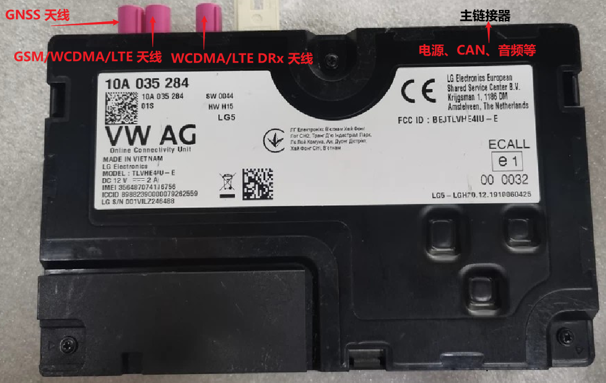
TLVHE4IU-N
OCU4 高配，不支持蓝牙和 Wi-Fi。使用的主要芯片如下 。
- 通信模组：Qualcomm MDM9240，支持的频段包括GSM 850/1900、UMTS B2/B4/B5/*B6、LTE FDD B2/B4/B5/B12/B13/B17/B29(RX)；
- MCU： 英飞凌 Tricore SAK-TC234LE-32F200F AB,有丰富的接口 1x FlexRay，2x LIN，4x QSPI，6x CAN，包括数据速率增强的 CAN FD；

TLVHE4IU-E
不支持蓝牙和 Wi-Fi。使用的主要芯片如下。
通信模组：Qualcomm MDM9240，支持频段 LTE FDD B7。
MCU： 英飞凌 Tricore SAK-TC234LE-32F200F AB,有丰富的接口 1x FlexRay，2x LIN，4x QSPI，6x CAN，包括数据速率增强的 CAN FD；
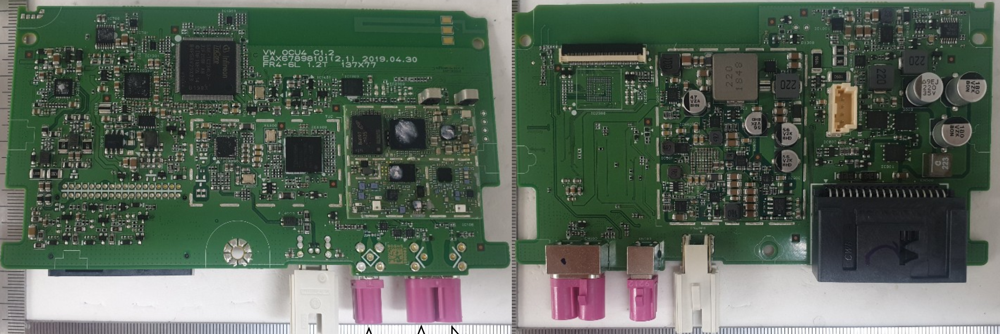
OCU3-TLVHM3IU/TLVLM3IU
OCU3 的 PCB 板大体结构相似，主要由一个通信模组以及一个用于和总线交互的 MCU 组成，剩下就是按需配置的以太网桥、Wi-Fi 芯片等。剩下的就是一些基础的电路模块如电源管理、晶振、滤波等。
OCU3 有高低配两个版本，但在高低配之下还有划分。高低配直接的差别是高配支持以太网，低配不支持。其他版本的差异主要是通信基带支持的频段不同、以及是否支持 Wi-Fi 和蓝牙。
OCU3 小版本较多，外观上也有如下两个版本，左边的一个较为圆润，右边一个棱角分明。
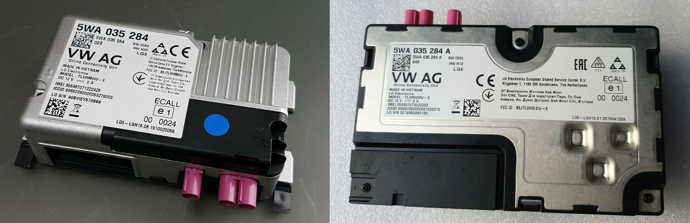
TLVHM3IU-E、TLVHM3IU-N 高配
OCU3 高配，支持以太网，不支持 Wi-Fi 和蓝牙。使用的主要芯片如下。
通信模组：Qualcomm MDM9240，支持的频段包括 GSM 900/1800 、UMTS B1/B3/B8 、LTE FDD B1/B3/B7/B8/B20/B28A；
以太网桥: 东芝 TC9560XBG,采用 ARM Cortex-M3 架构，支持 IEEE 802.1AS 和 IEEE 802.1Qav 等标准;RealTek RTL9044AB;
MCU： 英飞凌 Tricore SAK-TC234LE-32F200F AB,有丰富的接口 1x FlexRay，2x LIN，4x QSPI，6x CAN，包括数据速率增强的 CAN FD；

TLVLM3IU-N 低配
OCU3 低配,支持 Wi-Fi ，没有以太网和蓝牙。使用的主要芯片如下。
通信模组：Qualcomm MDM9628，支持的频段包括 GSM 900/1800 、UMTS B1/B3/B8 、LTE FDD B2/B4/B5/B12/B17；
MCU： 英飞凌 Tricore SAK-TC234LE-32F200F AB,有丰富的接口 1x FlexRay，2x LIN，4x QSPI，6x CAN，包括数据速率增强的 CAN FD；

TLVLM3IU-E 低配
OCU3 低配，不支持以太网、Wi-Fi 及蓝牙。使用的主要芯片如下。
通信模组：Qualcomm MDM9240，支持的频段包括 GSM 900/1800 、UMTS B1/B3/B8 、LTE FDD B1/B3/B7/B8/B20/B28A；
MCU： 英飞凌 Tricore SAK-TC234LE-32F200F AB,有丰富的接口 1x FlexRay，2x LIN，4x QSPI，6x CAN，包括数据速率增强的 CAN FD；

OCU2 - TUVM02IU
FCC ID 为 TUVM02IU-E、TUVM02IU-C 等，未查询具体的资料。
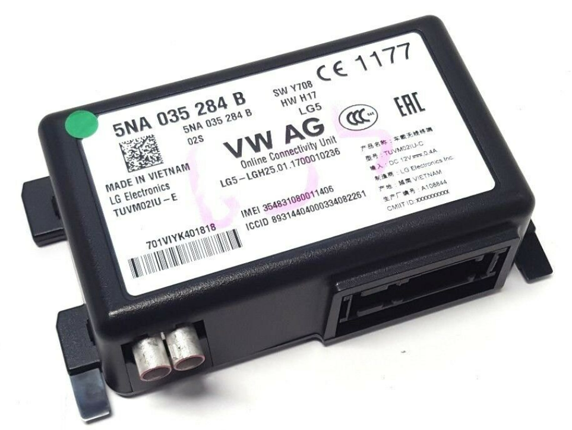
OCU1-TUVM01IU
TUVM01IU 是第一代 OCU，在越南制造。支持的频段包括 GSM 1900 PCS UP | LTE 2,1900 PCS UP | LTE 25,1900+ UP | LTE 35,TD PCS Lower DOWN | UMTS CH 2 UP | UMTS CH 25 UP | UMTS CH 35 DOWN 。
OCU 第一代经历过 3 次较大的硬件升级，从TUVM01IU-G 从衍生出了 TUVM01IU-R、TUVP01IU-G、TUVP01IU-R 等。
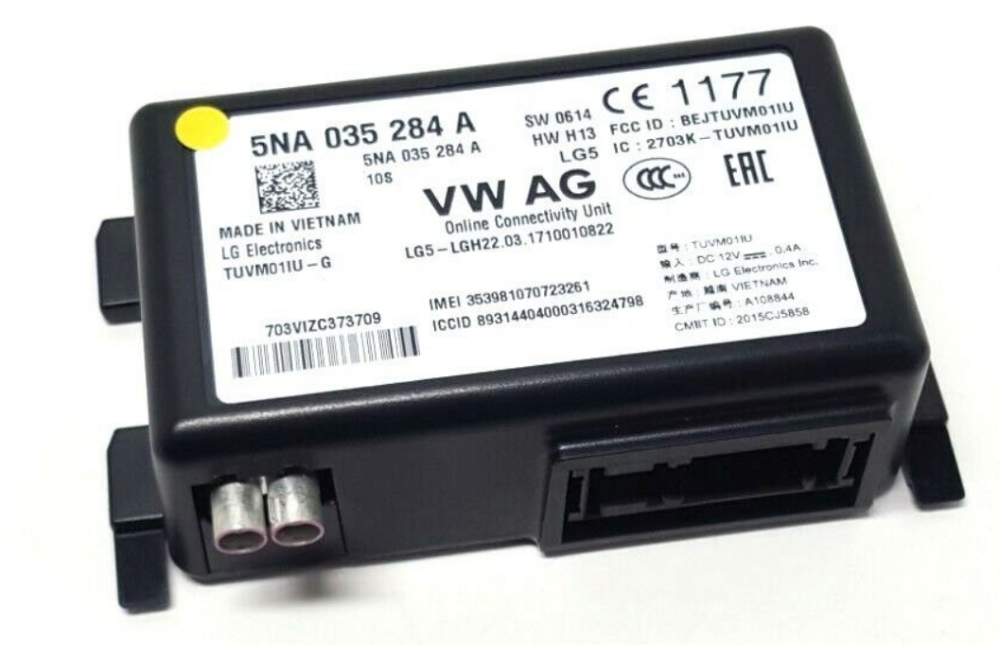
下图是 MQB 平台中使用第一代 OCU 的电路板，部分芯片丝印已无法识别。可识别的主要芯片如下。
- MCU: 飞思卡尔 SPC5606BMLL6 32 位 PPC 架构的 MCU，内存为 1MB，处理器频率为 64MHz。通信方式有 6 路 CAN，使用 JTAG 进行调试。
- SDRAW: 华邦 W94AD6KBHX。

接口测试
手头正好有一个 OCU3，接上 12V 直流电，使用逻辑分析仪识别出了 CAN 接口。其中一条报文的 ID 为 0x36F，数据为 F8 FF FF BF FF FF FF 07。
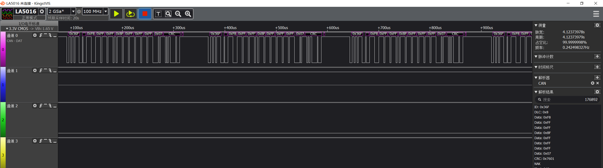
但在识别串口的时候出现了异常，使用常见的波特率无法解析数据。猜测使用了自有协议通信，无法查看到明文的数据。串口的使用需要用到后面讲到的开发工具 ODT。
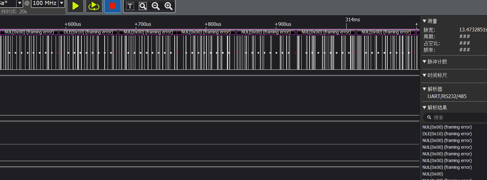
对其他接口的测试这里暂不展示。
开发工具 ODT
在第一代 OCU 中，使用 ODT(OCU Development Tool,OCU开发工具) 调试、测试、分析 OCU。
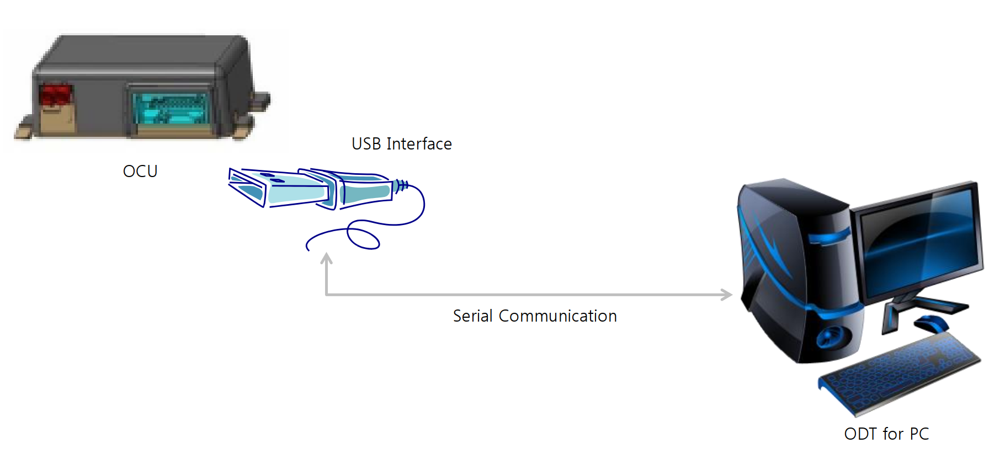
ODT 运行在 Window 系统上，通过 USB 转串口工具与 OCU 相连。 ODT 具有查看信息、设置参数、触发功能等功能。
- 查看信息：在 ODT 可以直观的查看 GNSS定位信息、网络状态、SIM卡信息、电源状态、系统日志、服务日志、调试日志、配置数据等；
- 设置参数：除了查看功能外，还能设置一些列参数，如 APN、供电模式等；
- 触发功能：此外，还能够收发短信、播放音频、升级系统等。
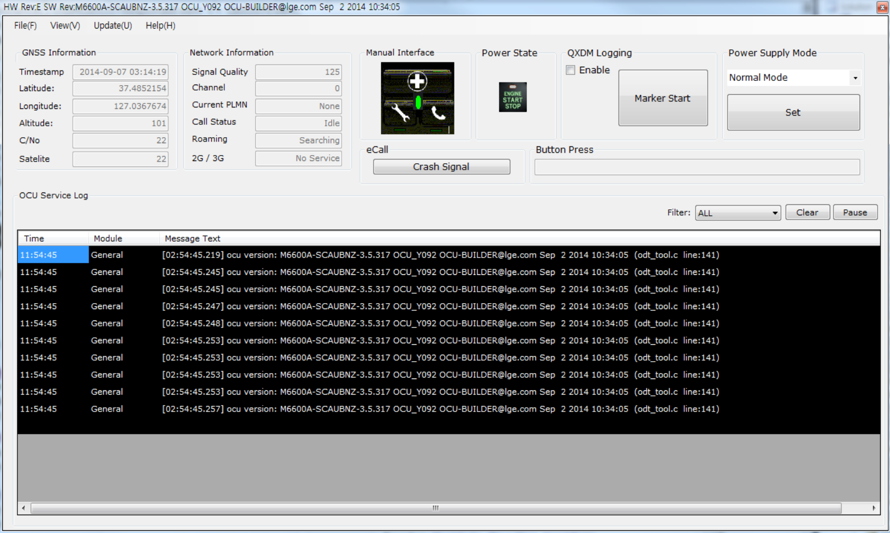
车联网中的 OCU
在车联网系统中，OCU 处于核心位置。从下图中可以看出，OCU 通过 CAN 总线和车载以太网接入网关； J794(车机) 方面，除了通过信息娱乐 CAN 相连以外， J794(车机) 还与 OCU 上的麦克风、扬声器相连。
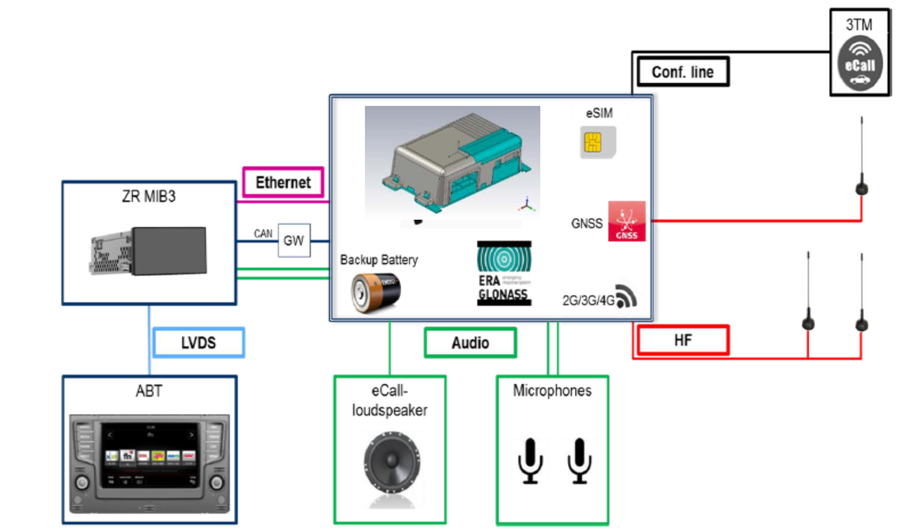
在大众最近的电子架构中，OCU 与车载应用服务器(ICAS1)通过车载以太网和CAN总线相连。OCU 与 娱乐系统（ICAS3）通过 A2B 相连。
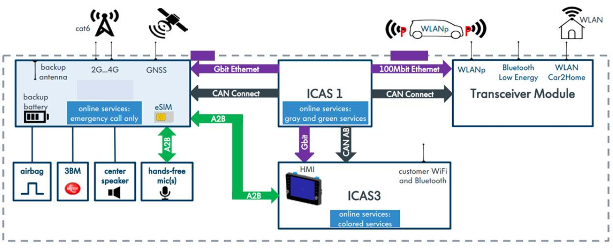
OCU 硬件总结
纵观四代 OCU 的发展，功能越来越丰富，承载的数据量也越来越大。在外观方面，各代差异较小，外部连接上依旧是少数的天线接口和主连接器上的排针，但可以看出还是多出了一些接口。芯片方面，仍旧采用通信模组搭配MCU的方案，通信模组负责与外界进行无线通信，MCU 负责与总线通信。伴随着技术的更替，车载以太网开始在车端广泛应用，以太网交换芯片的出现是OCU发展的最大变化，某种意义上也意味着车载网络的变革。
历代 OCU 使用的主要芯片变化不大，通信模组采用高通 MDM平台，供应商为 Sierra Wireless。国内其他厂商的 TBOX 常使用移远通信的通信模组。通信模组使用 eSIM卡；与 MCU 通过 SPI 和 GPIO 相连；与以太网网桥通过 PCIE 相连；与以太网交换芯片通过 RGMI 和 SPI 相连；与音视频芯片通过 I2S 相连。
MCU 与主控(通信模组) 通过SPI 和 GPIO 相连；下端连接 CAN、按钮、安全气囊等。
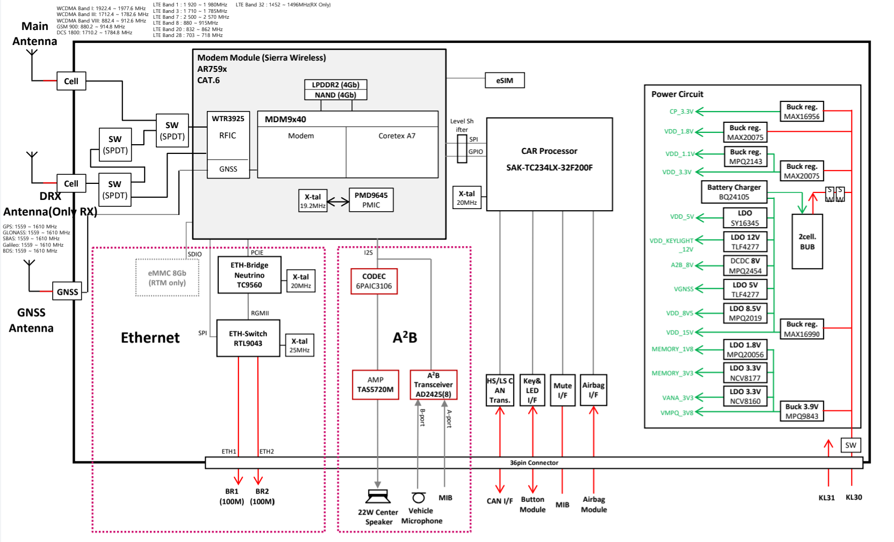
本文主要讲解硬件部分，系统与软件部分后续会专题讲解。
安全威胁
以渗透测试人员的角度审视 OCU 的安全，并列举一些常见的风险点。这里以大众 OCU 为主体，也会谈及一些通用 TBOX 的共性问题。
通信
无线网络
OCU 具备的无线通信方式有蜂窝网络、GNSS、Wi-Fi，可能还有蓝牙。蜂窝网络存在被降级的风险；定位存在被欺骗的风险，国内采用多模，仅 GPS 可被欺骗，威胁系数较小；Wi-Fi 层面一是配置安全，比较重要的一点是初始密码的强度，然后是 Wi-Fi 网络下网络隔离以及开放服务的安全。蓝牙主要是协议栈的安全。
内网 APN
通过 OCU APN 接入企业内网，由于内网防护较弱，容易被渗透。
总线
通过 OCU 总线攻击其他 ECU。
OTA
一般状态下，智能网联汽车中 OTA 请求与固件包的下发是通过 OCU 与 TSP 来实现的。获取到系统权限后，既可以通过分析升级程序或者分析通信流量获取固件包，获取升级包后，分析升级 包可以发现其中的脆弱点进行利用；还能分析出其他 ECU 的升级逻辑，利用升级程序缺陷刷入恶意固件绕过安全限制或植入恶意代码。
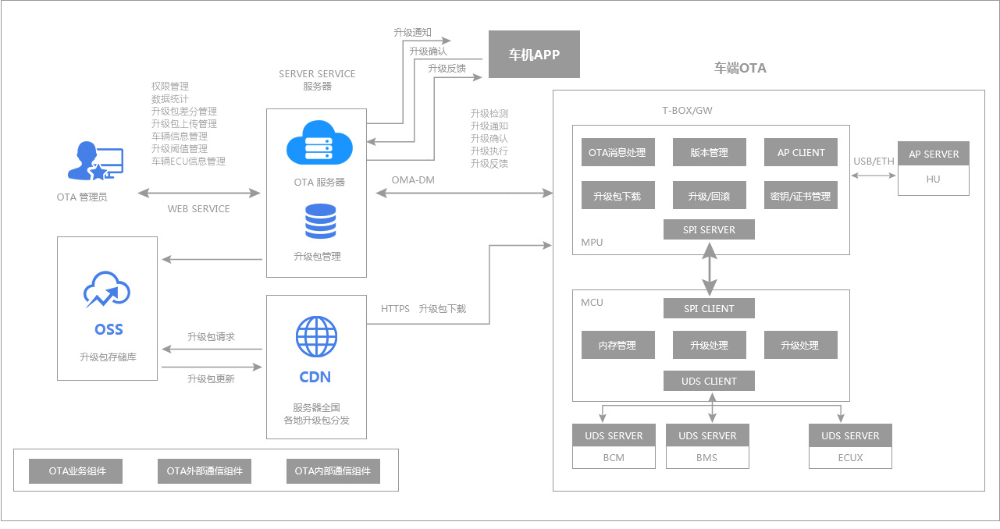
以下是一些可能出现问题的点：
- 云端威胁，OTA 平台存在漏洞。
- OTA 固件泄露，泄露的途径有OTA管理平台漏洞、测试包泄露、售后泄露、明文传输截取、逆向程序获取下载地址等。
- 升级程序设计缺陷，如升级包签名验签绕过等。
- OTA 的可用性，在实施软件升级时，若不能保证策略的合理性、提示的有效性，将会严重影响消费者的生命和财产安全，如某车型在长安街上停车一小时，乘客无法操纵车辆，甚至无法下车，给公共交通安全和用户生命安全带来严重隐患。
硬件安全
- 预留未保护的调试接口，如串口、ADB、USB、JTAG 等。
- 存储安全，SOP 封装 Flash 易被提取。
- MCU 代码读保护未开启，可提取固件、动态调试等。
系统/软件安全
- 使用过时的组件，开源组件存在已知漏洞，如 Dnsmasq。
- 未划分用户权限，都以 root 权限运行。
- 软件本身存在的漏洞，如命令注入、缓冲区溢出等。
- 开放的服务存在缺陷，SSH、Telnet 弱口令，私有服务传输敏感信息等。
总结
这篇文章实质上是对 TBOX 的一次安全分析。之所以没有直接讲TBOX，是因为直接讲太过空洞。于是借助 OCU 将 TBOX 实体化，讲一次实际的案例。不同厂家的设计方案虽有不同，但大体还是相似的。遂以小见大，把对 OCU 的安全认知类推到其他 TBOX 上。
致谢
感谢 Julie 的校对与建议、感谢提供参考资料的 Gorgias。
参考
- 科普 汽车紧急呼叫系统 eCall
- 大众ID3架构深度分析：软件定义汽车还很遥远
- 混合动力和新能源车辆装备的RTM系统你了解多少?
- 自动驾驶专题报告：三大驱动力，拐点已至，浪潮呼啸
- IZT Signal Generators ready for testing eCall-Systems - IZT GmbH
- 汽车TCU(Telematics Control Unit) 远程信息控制单元应用价值及趋势